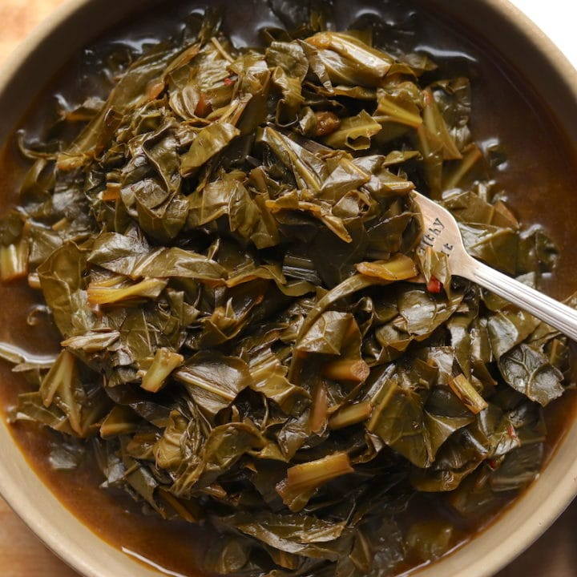

Kickin' Collard Greens

Description
Southern-style collard greens are savory comfort food with a deliciously zesty kick.
This classic, down-home side dish features fresh chopped collard greens cooked with crumbled bacon and chicken broth for a perfectly tender finish.
Ingredients
- 1 lb fresh collard greens, cut into 2-inch pieces
- 3 slices bacon
- 1 large onion, chopped
- 2 cloves garlic, minced
- 3 cups chicken broth
- 1 tbsp olive oil
- 1 tsp salt
- 1 tsp black pepper
- 1/2 tsp red pepper flakes
Steps
- Heat oil in large pot over medium heat.
- Add bacon, cook until crisp. Remove from pan, crumble and return to pan.
- Add onion to pan and cook until tender.Add garlic, cook until fragrant.
- Add collard greens, and fry until they start to wilt.
- Pour in chicken broth and seasonings.
- Reduce heat to low, cover, and simmer until greens are tender, about 45 minutes.